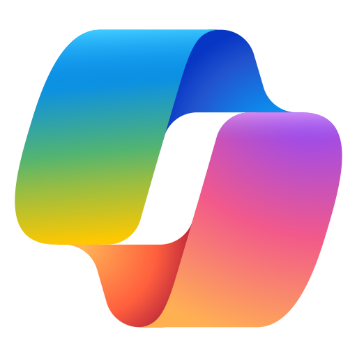

Hyper-engineered for Principal Data Architect / Lead Technical Consultant roles at tier-1 GCCs.
Santosh Jammi

AI-900 Azure AI Fundamentals DP-900 Data FundamentalsProfessional Summary
Strategic Lead Data Engineer with 8+ years of experience and a proven 5-year track record of leading high-performance engineering teams and managing direct stakeholder engagements. Expert in designing scalable Lakehouse architectures on Microsoft Azure and Microsoft Fabric, acting as the primary techno-functional bridge between business goals and technical delivery. Specializes in Cloud FinOps, significantly reducing operational costs through advanced compute optimization (DIUs, Parallelism) and SLA optimization. Deep domain expertise in the EU BFSI sector, ensuring strict GDPR / data sovereignty compliance while delivering rapid innovation and 99.9% system reliability.
Core Technical Competencies
Professional Experience
Strategic engineering leader serving as the primary onsite technical point of contact for Product Owners and Architects. Managed offshore delivery of 5+ engineers, ensuring zero schedule slippage across sprint deliverables while building highly resilient systems.
Leadership Served as primary technical point of contact for onsite Product Owners and Architects, facilitating requirement discovery, managing offshore delivery of 5+ engineers, and ensuring zero schedule slippage across all sprint deliverables.
Lakehouse Designed a robust Medallion Architecture (Bronze / Silver / Gold) managing 5TB+ data. Implemented idempotent ETL patterns with strict integrity constraints (MERGE INTO / ACID Delta Lake) to ensure 100% data consistency across all pipeline retries and transient cluster failures.
FinOps Led compute optimization — dynamically tuning DIUs and Parallelism in Azure Data Factory and resolving Integration Runtime bottlenecks — delivering a 40% reduction in data processing latency and significant cloud cost savings across enterprise pipelines.
Fabric Architected resilient Microsoft Fabric semantic models using Direct Lake mode, carefully managing F64 capacity memory guardrails (25 GB) to entirely eliminate refresh failures and ensure high availability for C-level dashboards, preventing DirectQuery fallback latency.
DevOps Automated CI/CD via Azure DevOps / YAML with automated rollback strategies; enforced strict Schema Evolution policies to maintain 100% downstream platform stability across 5+ concurrent engineering squads.
Orchestrated enterprise data modernization pipelines, translating complex client business logic into high-efficiency Azure infrastructure.
ETL Performance Re-engineered legacy pipelines using Azure Data Factory, solving the Small File Problem and cutting query execution times by 40% through parallelism tuning, partition optimization, and Integration Runtime right-sizing.
Reporting Redesigned Power BI models with aggregation tables, improving report load speeds by 25% and achieving high availability across all executive and operational reporting workloads.
Led end-to-end data platform engineering and BI solution delivery, specializing in secure architecture design and transactional query tuning for financial reporting workloads.
Data Quality Improved data model accuracy by 20% through automated data cleansing and validation frameworks, establishing consistent data quality standards across enterprise financial reporting pipelines.
Security Integrated Power BI with SaaS applications, implementing Row-Level Security (RLS) for sensitive financial data and designing role-based access controls governing the end-to-end lifecycle from data modeling to dashboard deployment.
Performance Increased data processing efficiency by 15% through advanced T-SQL query tuning, index optimization, and stored procedure refactoring across large-scale SQL Server and Azure SQL workloads.
Platform Collaborated with cross-functional teams to develop high-impact data products utilizing SQL Server and Azure services for efficient large-scale processing, supporting business intelligence initiatives across multiple domains.
Key Projects & Architectural Highlights
Education
LinkedIn Optimization Kit
Ready-to-paste headline options, About section, and 3 deep-technical authority posts. Click any section to copy it.
🏷️ Headline Options
📝 About Section
As a Principal Data Architect and Strategic Lead with over 8 years of dedicated experience in the Microsoft Azure native ecosystem, my expertise lies in designing and orchestrating planetary-scale data platforms that bridge complex business objectives with high-performance technical delivery.
Holding advanced certifications across the Azure stack (DP-600 Fabric Analytics, DP-203 Azure Data Engineer, and PL-300 Power BI), I specialize in the modernization of legacy infrastructures into highly resilient Medallion Lakehouse architectures. My recent focus has been on driving Microsoft Fabric implementation — leveraging OneLake interoperability and Direct Lake semantic modeling — to eliminate data silos and accelerate executive decision-making.
Furthermore, I bring a rigorous engineering mindset to Cloud FinOps, consistently reducing operational expenditures by optimizing Data Integration Units (DIUs) and cluster parallelism. Having successfully managed 5TB+ data ecosystems within strictly regulated EU BFSI environments, I am highly adept at enforcing GDPR compliance and data sovereignty.
I am currently open to global remote contracts and international corporate sponsorships where I can lead cross-functional engineering squads and drive enterprise-wide data transformations.
🔑 Core Focus: Microsoft Fabric | OneLake | Direct Lake | Delta Lake | Cloud FinOps | Medallion Architecture | Azure Data Factory | Databricks Unity Catalog | GDPR | Data Governance
📢 Authority Post Series
🚨 Your Power BI dashboard is lying to you — and it's costing your company thousands per month.
Here's a pattern I see repeatedly in Microsoft Fabric migrations:
Teams celebrate moving to Fabric, but the dashboards still feel slow. Here's why: they've silently fallen into DirectQuery Fallback — and they don't even know it.
A quick architecture breakdown:
🔴 Import Mode → Fast queries, but data is duplicated and always stale by hours
🟡 DirectQuery → Always fresh, but every click translates to an expensive SQL round-trip against the MPP engine
🟢 Direct Lake → The breakthrough: loads Delta Parquet files DIRECTLY from OneLake into the Analysis Services memory. No duplication. Near-real-time freshness. Lightning speed.
But here's the architectural trap nobody talks about:
An F64 Fabric SKU has a hard memory ceiling of 25 GB and a 1.5 billion row limit per table.
When your semantic model exceeds this threshold, Fabric tries to page data in and out of OneLake. When that fails, it silently falls back to DirectQuery — bypassing the entire in-memory advantage and hammering the SQL Analytics Endpoint.
Result? 45-second dashboard renders. Capacity spikes. Unhappy stakeholders.
The fix (from an architecture level):
✅ Remove high-cardinality columns (transaction IDs, GUIDs) from the semantic model entirely
✅ Aggressively partition Delta tables to minimize per-query memory footprint
✅ Compact small Parquet files regularly using OPTIMIZE + VACUUM
✅ Temporarily disable DirectQuery fallback during testing to expose breaking queries explicitly
The 25 GB guardrail is not a bug. It's a design constraint that rewards architecturally disciplined data engineers.
Are you managing Fabric capacity limits in your organization? What's your optimization strategy?
#MicrosoftFabric #DataArchitecture #DirectLake #PowerBI #CloudFinOps #DataEngineering #OneLake #AzureData
💸 I audited an ADF pipeline that was burning $4,200/month unnecessarily. Here's the exact fix — and the math behind it.
Most data engineers measure pipeline success by asking: "Did it run?"
Senior architects ask: "At what cost per byte did it run?"
This distinction is worth 15–20 LPA at tier-1 GCCs.
First, understand the unit economics of ADF:
A Data Integration Unit (DIU) is a composite measure of CPU + memory + network bandwidth.
Azure charges $0.25 per DIU-hour for copy activities.
The failure pattern I found:
• Pipeline: 7-hour sequential run, fixed at 4 DIUs
• Cost: 4 DIUs × 7 hours × $0.25 = $7.00 per run
• Monthly (20 business days): $140/pipeline
• Scale to 30 such pipelines = $4,200/month — for a workload that could complete in 45 minutes.
The architectural fix:
✅ Increase DIU allocation strategically (not blindly) to scale parallelism
✅ Define explicit parallel copy settings based on data payload characteristics
✅ Set Time-to-Live (TTL) on integration runtimes to prevent idle compute charges
✅ Implement dynamic DIU allocation via pipeline parameters — let payload SIZE drive DIU count, not gut instinct
After optimization:
• Runtime: 45 minutes (down from 7 hours)
• Monthly cost per pipeline: ~$18
• Savings: ~83% reduction
Cloud FinOps isn't about being cheap. It's about making infrastructure cost scale linearly with data volume — not exponentially with engineering laziness.
What's your most impactful ADF optimization story? Drop it below 👇
#AzureDataFactory #CloudFinOps #DataEngineering #ADF #MicrosoftAzure #DataArchitecture #CostOptimization #GCC
⚡ Your Spark pipeline WILL fail. The question is: will your data survive it?
In distributed systems, failure is not a possibility — it's a certainty.
The difference between a junior engineer and a Principal Architect is this:
Juniors write retry logic. Architects design systems that inherently cannot produce duplicate data, regardless of how many times they retry.
This is called idempotency.
The legacy failure pattern (append-only pipelines):
1. Spark node crashes mid-write at record #847,291
2. Pipeline auto-retries from the beginning
3. Records 1 through 847,290 are now duplicated in your staging table
4. Your C-suite revenue report now shows 2× the actual sales figures
5. You spend 3 days in a war room explaining why the data is wrong
The Delta Lake MERGE INTO solution:
Instead of appending, you define the EXACT resolution logic:
MERGE INTO target_table AS target
USING source_data AS source
ON target.record_id = source.record_id
WHEN MATCHED THEN UPDATE SET *
WHEN NOT MATCHED THEN INSERT *
Run this 1 time or 100 times. The final state of the table is IDENTICAL.
Why this is guaranteed safe:
Delta Lake enforces full ACID compliance via its transaction log (_delta_log).
A partially failed MERGE transaction is NEVER committed. The transaction log ensures atomicity — either the entire merge succeeds and is logged as a new commit, or the table state rolls back completely.
This is not just a coding pattern. It's an architectural philosophy:
Stop handling errors. Start building systems that ignore them.
Are you using idempotent MERGE patterns in your Medallion architecture? What's your MATCHED / NOT MATCHED strategy for SCD Type 2?
#DeltaLake #DataEngineering #ApacheSpark #DataArchitecture #Databricks #MicrosoftFabric #ACID #MedallionArchitecture #DataQuality
Naukri Profile Optimization Kit
Algorithmic hacks and optimized copy-paste content specifically designed to maximize visibility and profile score on India's primary recruitment portal.
🏷️ Naukri Resume Headline
The resume headline is highly indexed by Naukri's search crawler. Choose one of these target-rich headlines:
🔑 Naukri Key Skills (Algorithmic Tags)
Recruiters search Naukri by selecting exact tags. Ensure your profile has the maximum number of high-relevance tags (click to copy):
📝 Naukri Profile Summary
Paste this summary into your Naukri profile bio. It contains crucial density of target titles and technical keywords:
Strategic Lead Data Engineer & Principal Data Architect with 8+ years of experience designing and managing planetary-scale data platform architectures within the Microsoft Azure native ecosystem. Expert in building highly resilient 5TB+ Medallion Lakehouses (Bronze-Silver-Gold) using Delta Lake, Databricks (Unity Catalog), and Microsoft Fabric (OneLake, Direct Lake).
Specialist in Cloud FinOps, delivering up to 40% reduction in data processing latency and significant compute cost savings through Data Integration Unit (DIU) tuning and cluster parallelism optimization. Deep domain experience in the regulated EU BFSI sector, establishing strict GDPR data sovereignty, end-to-end data quality checks, and robust Row-Level Security (RLS) policies. Certified Fabric Analytics Engineer (DP-600), Azure Data Engineer (DP-203), and Power BI Analyst (PL-300).
💡 Naukri Algorithmic Visibility Hacks
Tier-1 Target Companies
15 GCC organizations with confirmed large-scale Azure / Fabric investments. Prioritize by alignment to your domain expertise.
Compensation Reality Check — The Fabric Premium
| Experience Level | Standard Azure / ADF (LPA) | Premium Fabric + Databricks (LPA) | Compensation Spike |
|---|---|---|---|
| Mid-Level Engineer (3–5 yrs) | ₹15 L – ₹20 L | ₹20 L – ₹28 L | 33% – 40% |
| Senior Engineer (5–8 yrs) | ₹20 L – ₹25 L | ₹28 L – ₹38 L | 40% – 52% |
| Principal Architect (8–10+ yrs) | ₹25 L – ₹35 L | ₹40 L – ₹55 L+ | 42% – 60% |
International Recruitment Networks
30-Day Architectural Fluency Roadmap
Build an impenetrable Databricks and PySpark architectural foundation in 4 focused weeks. Designed to enable you to control system design interviews without daily scripting experience.
Interview Scenario Blueprints
Three high-stakes system design scenarios with complete model answers. Practice until these flow naturally in conversation.
Scenario 1
Fabric Migration & DirectQuery Fallback Crisis
Most common at: Microsoft IDC, LTIMindtree, Tech Mahindra, Cognizant
▼
Immediate Diagnosis: This is a classic symptom of Direct Lake failing to load data into the Analysis Services memory, resulting in a DirectQuery Fallback.
Root Cause Explanation: When the DAX query requires data exceeding the 25 GB threshold, the system attempts to page data in and out of OneLake. If paging fails and fallback is enabled, the query is offloaded to the Fabric SQL Analytics Endpoint. This MPP engine is optimized for batch processing, not instantaneous BI slice-and-dice operations — hence the 45-second latency and compute spikes.
Architectural Fix — 4 Actions:
- Inspect Delta Parquet files for optimal compression. Apply OPTIMIZE + ZORDER on high-filter columns.
- Remove high-cardinality columns (unique transaction IDs, GUIDs) from the semantic model entirely — they exist in Delta but should not be modeled in the BI layer.
- Enforce strict partitioning strategies to collocate frequently queried data. Compact small files regularly to minimize memory footprint.
- Temporarily disable DirectQuery fallback at the dataset level during testing — this forces explicit failures, precisely identifying which queries break the 25 GB guardrail.
Scenario 2
Databricks vs Fabric — Zero-Copy Data Movement
Most common at: JPMorgan Chase, Walmart, HSBC, UBS India
▼
Core Principle — Zero Data Movement: Rewriting mature Databricks pipelines is financially irresponsible, introduces massive operational risk, and degrades historical data fidelity. We use Microsoft Fabric OneLake Shortcuts.
Precise Security Implementation:
- Register an Azure Service Principal (SPN) and assign it the Storage Blob Data Contributor role on the underlying ADLS Gen2 storage accounts.
- Within Databricks, configure Azure Key Vault via Secret Scopes to handle OAuth credentials securely — never hardcode credentials in notebooks.
- Create OneLake Shortcuts in Fabric pointing to the ADLS Gen2 ABFS endpoints. Fabric reads these Delta tables as if they were natively in OneLake — no data movement.
- Databricks continues processing using its optimized Photon engine. Fabric consumes the same Delta tables via Direct Lake for BI reporting. Two compute engines. One data copy.
Business Value Statement: This architecture eliminates storage duplication costs, preserves the $X million investment in mature Databricks pipelines, and delivers real-time Power BI reporting within 2 weeks — not 6 months of pipeline rewrites.
Scenario 3
Delta Lake Performance Degradation — Z-Ordering to Liquid Clustering
Most common at: Novartis, AstraZeneca, Walmart, Optum
▼
Root Cause — Mathematical Flaw in Z-Ordering: Z-ordering uses multidimensional Z-curves to map multi-dimensional data into one dimension. Its fundamental flaw is that it requires a complete rewrite of the entire table's Z-cube structure every time OPTIMIZE runs — regardless of how little new data was added.
The Modern Standard — Liquid Clustering:
- Liquid Clustering uses Hilbert curves instead of Z-curves. Hilbert curves maintain a tighter bounding box around clustered data, preserving strict distance between adjacent points — superior data skipping.
- It is fundamentally incremental: it only clusters new data into unstable Z-cubes until they reach a target size limit. Previously sealed (stable) Z-cubes are completely untouched during future optimization runs.
- It handles data skew dynamically and allows concurrent read/write operations without table locks.
Business Impact Statement: Transitioning from Z-ordering to Liquid Clustering eliminates rewriting terabytes of static historical data daily. The 6-hour OPTIMIZE job becomes a sub-45-minute incremental operation. DBU consumption drops dramatically. Query performance improves due to tighter data locality. This single architectural change can save $15,000–$40,000/month in compute costs for a multi-terabyte production table.
Additional Common Questions
Elite ATS Keyword Arsenal
Every keyword below has been mapped to a specific ATS algorithmic signal. Click any chip to copy it. Use the copy-all button for each category.
Resume ATS Density Checker
Paste your resume text below and see which high-value keywords are present vs missing.